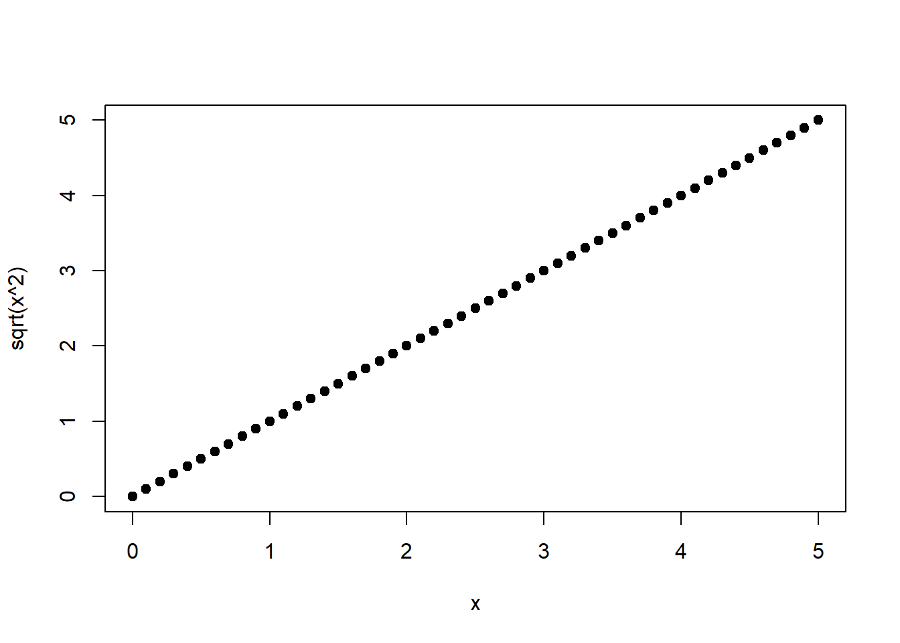
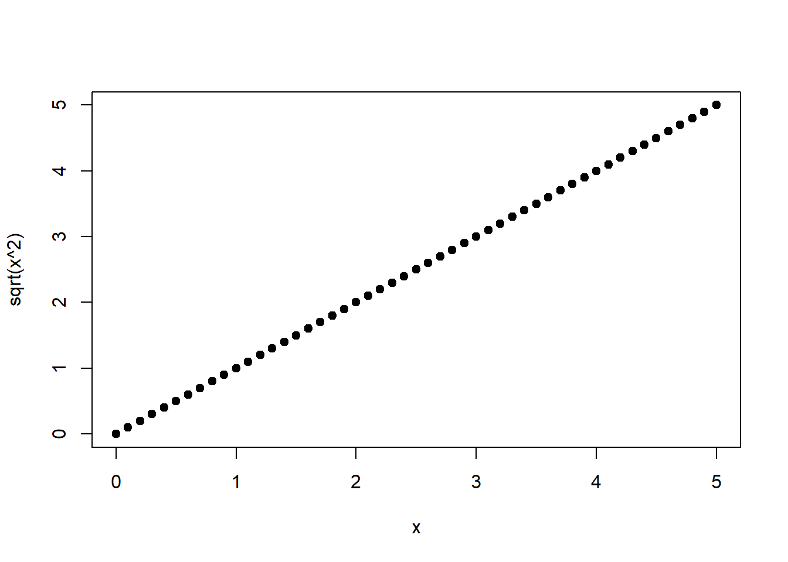

Kapitel 1 Einführung
1.1 Statistik im empirischen Forschungsprozess
Lesen Sie dazu bitte Kapitel 2.4 von Zimmermann-Janschitz (2014), s. Moodle. Gemäß der dort gewählten Kategorisierung befasst sich die Statistik hauptsächlich mit Datenanalyse (Punkt 7), obwohl die angrenzenden Schritte ebenfalls wichtig sind. Auf Auswahl der Untersuchungseinheit (Punkt 4), Datenerhebung (Punkt 5) und Datenaufbereitung (Punkt 6) werden wir in Kapitel 2 näher eingehen. Punkt 8 (Interpretation und Rückschlüsse) wird durchgehend eine Rolle spielen.
1.2 Warum Statistik?
Statistik ist Teil des physisch- und humangeographischen Methodenpakets. Da die Erkenntnisse der Geographie in vielen Teilen auf dem empirischen Forschungsprozess basieren ist statistische Analyse als Argumentationsunterstützung und als Beweissicherung unumgänglich. Außerdem dient sie der Bestätigung oder Widerlegung theoretischer Ansätze und der Generierung neuer Informationen aus verfügbaren Daten. In der Praxis dient Statistik häufig als Entscheidungsgrundlage.
Lesen Sie bitte Kapitel 2.3 (Zimmermann-Janschitz 2014) für konkrete Anwendungsbeispiele der Statistik in der Geographie. Am Ende jenes Kapitels finden Sie außerdem eine Erklärung der Teilbereiche der Statistik. Mit der deskriptiven (beschreibenden) Statistik beschäftigen wir uns in den Wochen 3 - 5. Dazu ist das Lehrbuch von Zimmermann-Janschitz (2014) wichtig. Mit der induktiven (schließenden) Statistik beschäfigen wir uns in den Wochen 8 - 13. Die Brücke zwischen diesen beiden Teilbereichen - wie es Zimmermann-Janschitz (2014) darstellt - ist die Wahrscheinlichkeitstheorie, mit deren Grundlagen wir uns in den Wochen 6 - 7 auseinandersetzen.
1.3 Mathematische Notation und Grundlagen
In diesem Unterkapitel werden wichtige Begriffe eingeführt und wichtige mathematische Grundlagen aus der Schule wiederholt. Lesen Sie bitte dazu Kapitel 1.2 von Zimmermann-Janschitz (2014). Dort werden anhand des Beispieles der Kostenaufstellung für eine “Statistikexkursion” die Begriffe Variable, Index und Summe eingeführt. Variable wird synonym mit Merkmal verwendet. In den Zeilen der Tabelle 1.1 in Zimmermann-Janschitz (2014) stehen dann die einzelnen Merkmalswerte oder einfach nur Werte für die Untersuchungselemente (statistische Einheiten). Jede statistische Einheit ist gekennzeichnet durch einen eigenen Index. An dieser Stelle sei ergänzt, dass ein Index auch unterschiedliche Variablen bezeichnen kann, z.B. \(x_1, x_2, \ldots\).
Die Summe verschiedener Merkmalswerte wird wie folgt abgekürzt: \[\begin{equation} \sum_{i=1}^{n}x_i=x_1+x_2+\ldots+x_{n-1}+x_n \tag{1.1} \end{equation}\] Das Summenzeichen \(\Sigma\) symbolisiert die Anweisung, die Merkmalswerte \(x_i\) zu addieren, wobei der Index \(i\) von 1 bis zur Anzahl der Werte \(n\) läuft.
Eine ähnliche verkürzte Schreibweise gibt es für das Produkt: \[\begin{equation} \prod_{i=1}^{n}x_i=x_1 \cdot x_2 \cdot \ldots \cdot x_{n-1} \cdot x_n \tag{1.2} \end{equation}\] Hier gibt das Produktzeichen \(\Pi\) die Anweisung, die Merkmalswerte \(x_i\) zu multiplizieren, wobei wiederum der Index \(i\) von 1 bis zur Anzahl der Werte \(n\) läuft.
Manchmal wird das Multiplikationszeichen weggelassen und es findet sich nur ein kleiner Abstand zwischen den zu multiplizierenden Größen: \[\begin{equation} \prod_{i=1}^{n}x_i=x_1 \, x_2 \, \ldots \, x_{n-1} \, x_n \tag{1.3} \end{equation}\] Diese Schreibweise, die man häufig aus Platzgründen findet, impliziert in jedem Fall eine Multiplikation.
Zwei weitere Begriffe, die Zimmermann-Janschitz (2014) nicht einführt, sind für diese Lehrveranstaltung noch wichtig, Vektor und Matrix:
In einem Reihenvektor sind Größen (z.B. Merkmalswerte) horizontal angeordnet: \[\mathbf{x} = \begin{pmatrix} x_1 & x_2 & \cdots & x_n \end{pmatrix}\]
In einem Spaltevektor sind die Größen vertikal angeordnet: \[\mathbf{x} = \begin{pmatrix} x_1\\ x_2\\ \vdots\\ x_n \end{pmatrix}\]
In einer Matrix sind Größen wie in einer Tabelle angeordnet, z.B. Merkmalswerte unterschiedlicher Variablen (Spalten): \[\mathbf{X} = \begin{pmatrix} x_{1,1} & x_{1,2} & \cdots & x_{1,p}\\ x_{2,1} & x_{2,2} & \cdots & x_{2,p}\\ \vdots & \vdots & \ddots & \vdots\\ x_{n,1} & x_{n,2} & \cdots & x_{n,p} \end{pmatrix}\] Hier hat jeder Merkmalswert zwei Indizes, einen für die statistische Einheit (hier bis Anzahl \(n\)) und einen für die Variable (hier bis Anzahl \(p\)).
Vektoren und Matrizen werden in der Regel fett gedruckt, wobei Vektoren \(\mathbf{x}\) mit Kleinbuchstaben und Matrizen \(\mathbf{X}\) mit Großbuchstaben bezeichnet werden. Die Rechenregeln für Vektoren und Matrizen sind in der linearen Algebra zusammengefasst. Wir werden daraus nur Auszüge in den letzten Semesterwochen verwenden.
1.3.1 Exponential- und Logarithmusfunktion
Zwei mathematische Funktionen sind für diese Lehrveranstaltung besonders wichtig, die Exponential- und die Logarithmusfunktion. Die folgende Darstellung ist inspiriert von Gelman and Nolan (2002).
Stellen Sie sich eine Amöbe vor, die sich innerhalb einer Stunde teilt (Abbildung 1.1). Diese zwei Amöben teilen sich jede in einer weiteren Stunde usw. Wie lautet die Gleichung für die Anzahl Amöben, \(y\), als Funktion der Zeit, \(t\) (in Stunden)?

Abbildung 1.1: Sich teilende Amöbe.
Quelle: http://www.gutenberg.org/files/18451/18451-h/images/illus002.jpg.
{kind=link}
Die Gleichung lautet: \[\begin{equation} y=2^t \tag{1.4} \end{equation}\] Dies ist eine Exponentialfunktion mit Basis \(2\) und Exponent \(t\). Abbildung 1.2 zeigt zwei Plots dieser Funktion. (Den verwendeten R-Code werden sie im Verlauf der PC-Übung verstehen.)


Abbildung 1.2: Links: Plot von Gleichung (1.4). Rechts: Plot von Gleichung (1.4) auf logarithmischer Skala.
Die Umkehrfunktion der Exponentialfunktion ist die Logarithmusfunktion: \[\begin{equation} log(y)=log(2^t)=t \cdot log(2) \tag{1.5} \end{equation}\] Da der Logarithmus von \(y\) eine lineare Funktion von \(t\) ist (Gleichung (1.5)), zeigt die rechte Seite von Abbildung 1.2 (\(y\) auf logarithmischer Skala) eine gerade Linie.
Übliche Basen der Logarithmusfunktion sind: \[\begin{equation} log_2\left(2^t\right)=lb\left(2^t\right)=t \tag{1.6} \end{equation}\]Dies ist der sogenannte binäre Logarithmus (lb).
\[\begin{equation} log_{10}\left(10^t\right)=lg\left(10^t\right)=t \tag{1.7} \end{equation}\] Dies ist der sogenannte dekadische Logarithmus (lg).
\[\begin{equation} log_e\left(e^t\right)=ln\left(e^t\right)=t \tag{1.8} \end{equation}\] Dies ist der sogenannte natürliche Logarithmus (ln),wobei \(e \approx 2.7183\) die Eulersche Zahl ist.
Achtung! Programmiersprachen wie R nutzen oft eine andere Notation, der wir auch in diesem Kurs folgen: \[\begin{equation} ln()=log() \tag{1.9} \end{equation}\] \[\begin{equation} e^t=\exp(t) \tag{1.10} \end{equation}\]
Die Rechenregeln der Exponentialfunktion sind: \[\begin{equation} a^m \cdot a^n=a^{m+n} \tag{1.11} \end{equation}\] \[\begin{equation} a^n \cdot b^n=(a \cdot b)^n \tag{1.12} \end{equation}\] \[\begin{equation} \frac{a^m}{a^n}=a^{m-n} \tag{1.13} \end{equation}\] \[\begin{equation} \frac{a^n}{b^n}=\left(\frac{a}{b}\right)^n \tag{1.14} \end{equation}\] \[\begin{equation} \left(a^m\right)^n=a^{m \cdot n} \tag{1.15} \end{equation}\]
Die Rechenregeln der Logarithmusfunktion sind: \[\begin{equation} log(u \cdot v)=log(u)+log(v) \tag{1.16} \end{equation}\] \[\begin{equation} log\left(\frac{u}{v}\right)=log(u)-log(v) \tag{1.17} \end{equation}\] \[\begin{equation} log\left(u^r\right)=r \cdot log(u) \tag{1.18} \end{equation}\]
1.3.2 Quadratische Funktion und Wurzelfunktion
Abschließend sei noch die quadratische Funktion erwähnt (Abbildung 1.3, links): \[\begin{equation} f(x)=x^2 \tag{1.19} \end{equation}\]
Und ihre Umkehrfunktion, die Wurzelfunktion (Abbildung 1.3, rechts): \[\begin{equation} \sqrt{x^2}=x \tag{1.20} \end{equation}\]
 

Abbildung 1.3: Links: Quadratische Funktion von \(x\). Rechts: Wurzelfunktion von \(x^2\), s. Gleichung (1.20).